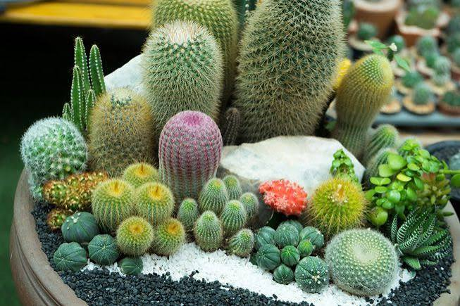
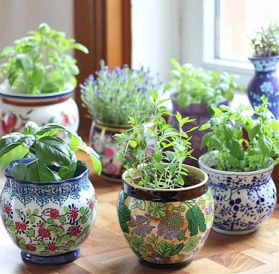

Head Gardener
Growing Nature with Love
Welcome to our Botanical Garden. We protect rare plants, colorful flowers, medicinal herbs and beautiful trees. Explore nature and enjoy a peaceful journey through our green world.

Welcome to our Botanical Garden. We protect rare plants, colorful flowers, medicinal herbs and beautiful trees. Explore nature and enjoy a peaceful journey through our green world.

Roses are famous for their beautiful petals, sweet fragrance and vibrant colors found in gardens.

Orchids are elegant flowering plants with thousands of unique species growing in tropical and temperate regions.

Lilies are graceful flowers admired for their elegant shape, fragrance and colorful blossoms gardens.

The red rose symbolizes love, passion, and beauty. Its vibrant petals and pleasant fragrance make it one of the world's most admired flowers.

Sunflowers are known for their bright golden petals and large blooms. They naturally turn toward the sun and symbolize happiness and positivity.

Pink tulips represent affection, kindness, and elegance. Their graceful shape and soft colors make them popular in gardens and floral arrangements.

Cactus plants thrive in dry deserts and store water inside their thick stems to survive harsh climates.

Herbal plants have been used for centuries to prepare natural medicines, teas and healthy remedies.

Bonsai trees are carefully shaped miniature trees that represent patience, balance and artistic beauty to mesmerize the view.

Visit our annual flower exhibition!